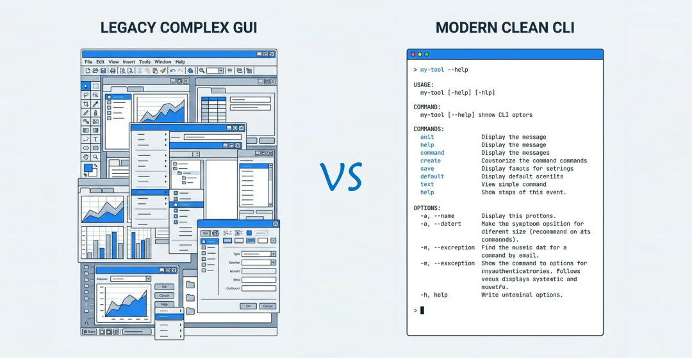
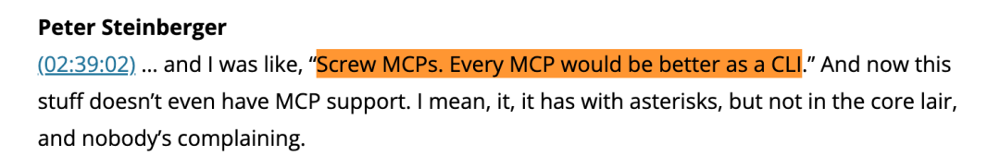
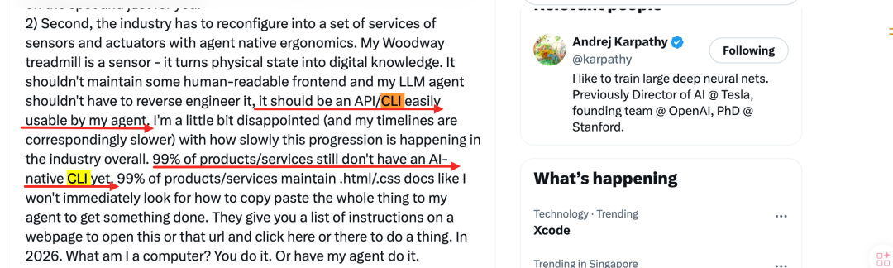
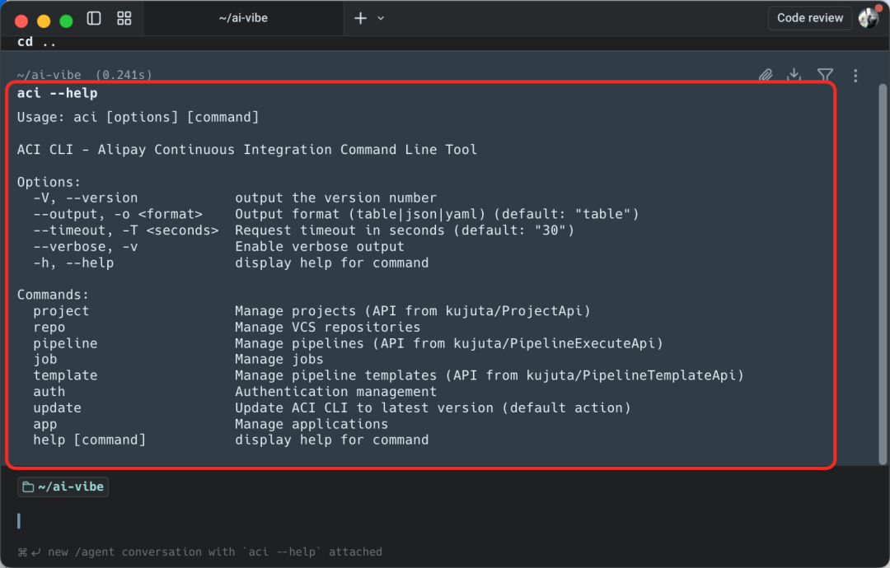
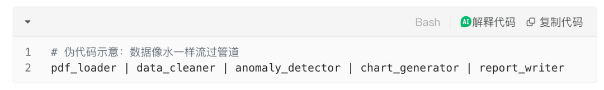
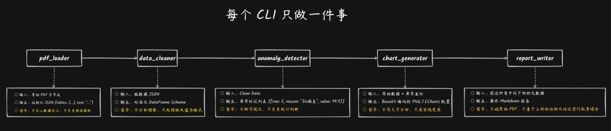
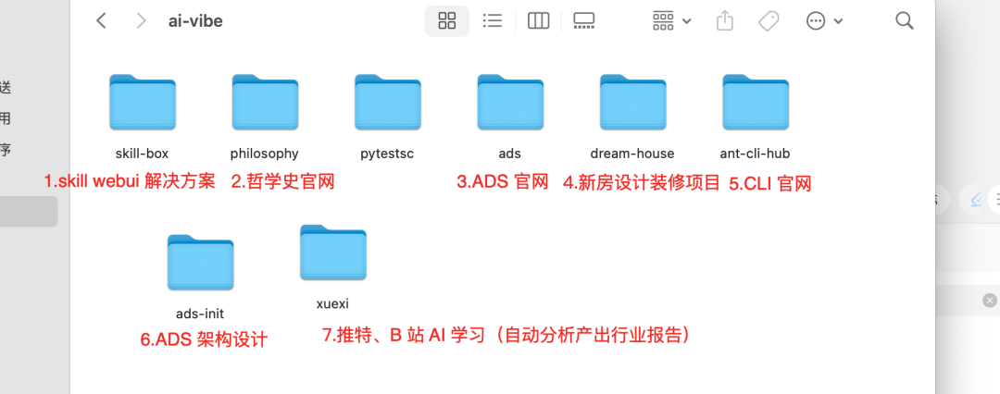
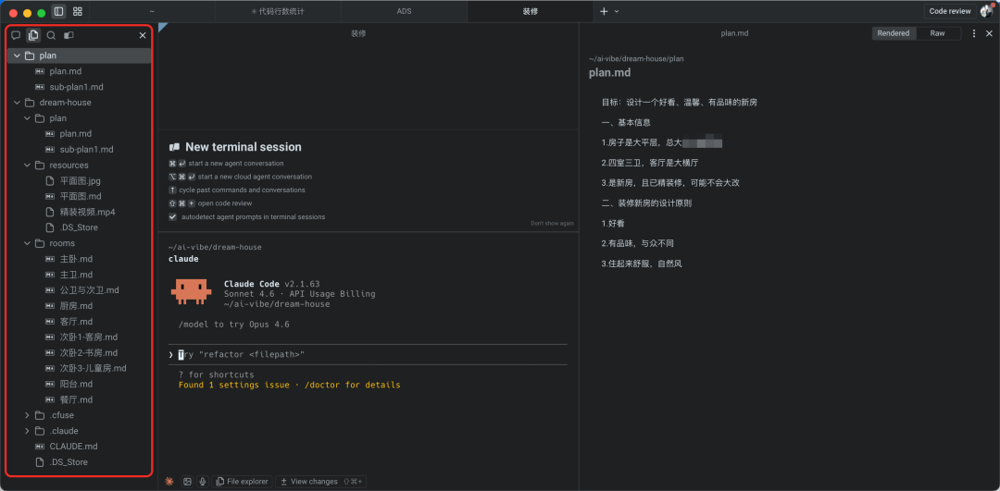

PS：记得看最后的 Q3 中提到的真实案例，你可能会被震撼到！
零、什么是 CLI？
说到 CLI，我们不得不说到我们熟悉的 GUI，它们的本质都是人和计算机的交互界面
GUI：全称 Graphical User Interface（图形用户界面），人通过操作图形操作计算机
CLI：全称 Command Line Interface（命令行界面），人通过操作自然语言操作计算机（因为命令行的本质是英文和字符）
先看一张更直观的图，图左是一个工具的 GUI 界面，图右是一个工具的 CLI 界面，怎么样，哪个看着更简洁？

业界很多 AI Builder & 领袖都在为 CLI 发声
OpenClaw 作者 Peter Steinberger 提出：忘掉 MCP，CLI 才是 AI 连接世界的终极接口。Peter Steinberger 在 2026 年 2 月与 Lex Fridman 的访谈中首次系统阐述了这一观点，在这段访谈中，他详细解释了 CLI 优于 MCP 的核心原因：可组合性（composability）和上下文污染（context pollution）。他指出 MCP 返回的大量 JSON 会填满上下文窗口，而 CLI 可以通过管道（pipe）和 jq 等工具灵活过滤数据
采访原文：https://lexfridman.com/peter-steinberger-transcript/

AI 概念大师 Andrej Karpathy 最近发的一个推文提出：目前世界上 99% 的产品（设备）还是为人类设计的，这些产品用户界面是一个说明书或者一个 UI 的操作界面，未来的产品都应该设计一套 For AI 的 Portal（包含三要素：稳定性 CLI、清晰的权限体系、AI 可读的文档），谁在这方面做得好就可以抢占未来 AI 市场的先机
推特原文：https://x.com/karpathy/status/2024583544157458452

一、为什么 CLI 才是工具 For AI Agent 最原生的 Interface
1.1、原因一：CLI 的 --help 就是完美的工具说明书(Prompt)
人类觉得 CLI 难用，是因为我们记不住参数，但对 AI 来说，这不是问题，当你给 AI（比如 Claude Code、CodeFuse） 一个工具的 CLI（以蚂蚁 CI/CD 工具 ACI 为例），它会：
运行
aci --help阅读输出的文档
理解每个参数的作用
1s 不到就学会了这个工具如何使用

整个过程零配置，零预训练，零人工对齐，在 AI 时代，写好 --help 文档，比写好 UI 界面更重要。
1.2、原因二：CLI 背后的 Unix 哲学与 LLM 序列生成和思维链的天然契合
Unix 哲学的核心是：只做一件事，并把它做好。通过管道（Pipe）进行组合，这正好与智能体的“思维链（Chain of Thought）”逻辑高度契合。
来看一个真实场景：
"请分析这份PDF的内容，找出数据异常，画图表，并写总结..."

实际执行链：

第一性思考：
AI Agent 的核心认知是基于 Token 的序列生成，而 CLI 恰好是基于字节流的序列交互，这是 LLM 具备推理涌现的本源
认知带宽匹配：LLM 处理的是线性文本序列，而非空间化的视觉布局。GUI 的二维坐标、层级菜单、视觉反馈对 Agent 而言是需要额外“转译”的噪声（需要 OCR、元素检测、坐标预测）。而 CLI 的 stdout/stderr 直接就是 LLM 的“母语”——纯文本。
状态表示的压缩性：
ps aux | grep python这一行命令的信息密度，等价于在 GUI 中多次点击、窗口切换和视觉扫描。文本是信息熵最高的载体，而 LLM 的上下文窗口（context window）是昂贵的稀缺资源。CLI 让 Agent 用最少的 token 获得最大的系统状态信息。
1.3、原因三：CLI 编写成本非常低且通用
在 MCP 模式下，要给 AI 增加一个新能力，你需要：
定义 JSON Schema
实现 JSON-RPC 服务
编写 Prompt 模板
对接协议版本
而在 OpenClaw 的 CLI 模式下，写一个命令行工具就行了：
想控制智能家居？写个 CLI
想管理 WhatsApp 消息？写个 CLI
想操作云服务器？写个 CLI
二、企业级 CLI 落地思路
企业级 CLI 规模化落地有多重难点，需要从下面四个维度着手：
🧠 认知上：这是最重要的一个维度，如果很多工具平台负责人不认可 CLI 化是 For AI 最好的 Interface，只做 MCP 上翻，那么企业 CLI 不可能规模化落地，企业 AI 转型速度也会受限，所以要有更多的布道者和样板间
📋 规范上：公司 CLI 设计规范，建立面向AI与人机双模交互的统一设计规范，标准化命令结构、错误码与结构化输出，确保全公司 CLI 体验一致且机器可读
🏠 基建上：研发基础设施团队有义务去推动公司级统一的 CLI 安全、鉴权、API 网关解决方案
CLI 安全基建：构建零信任架构下的命令执行沙箱与敏感数据全生命周期加密保护机制，防范AI自动化操作中的注入与泄露风险。
CLI 鉴权基建：基于企业SSO实现统一身份认证与短期Token自动轮转，彻底消除长期AK并支持"一次登录，全CLI通行"
工具 API 网关基建：工具的 CLI 化首先依托于工具完善且 API 鉴权和原子化的 API 设计，过去大部分的平台 API 没有，还有很多平台甚至连 OpenAPI 都没有，还有很多 API 的设计不够原子，所以需要有公司级统一的 API 网关和良好的 API 设计规范
生态上：需要有一个统一的公司级 CLI 市场，让大家方便的查找 CLI、制作 CLI
作为蚂蚁CIO-研发效能研发基建团队，这篇文章也是在为 CLI 布道，但是主张不能停留在口头，所以，我们正在和蚂蚁安全、API 网关、鉴权多基建团队协同推动蚂蚁 CLI 规模化落地！
三、QA
Q1：如果 CLI 是 AI Agent 最原生的 Interface，那边平台还需要做 MCP 上翻吗？
A：如果是在本地使用的 AI Agent（比如 Claude Code、Cursor、CodeFuse、OpenClaw等），AI 和工具连接最好的方式是 Skills + CLI，所以确实不需要做 MCP 了；如果是线上的微服务 Rumtime 类的 Agent（不可操作 bash），那边可能还需要 MCP，但是未来的趋势可能 OpenClaw 这类可操作 bash 类的 Agent 会成为主流（云端的 Agent 也可以通过沙箱实现），最后列出 MCP 和 CLI 的对比，感受一下：
Q2：CLI 是一个发展了几十年的技术，AI 时代又开始复兴了，说明了什么？
A：CLI 在 AI 时代的复兴，不是倒退，而是前进到了一个需要人机协作的新阶段。它证明了 Unix 哲学——"做一件事并做好它"、"文本流是通用接口"——在 50 年后依然闪耀。AI 无需 GUI 的视觉反馈，其"文本进文本出"的本质与 CLI 的文本流完美契合，使人机首次共用同一接口。Unix 哲学的组合性在 Token 经济下显现优势：通过管道按需调用原子能力，避免 MCP 式的上下文税。这标志着控制权从应用开发者转向 AI 编排，工具的设计从臃肿单体设计回归原子化设计。
Q3：是否所有平台都需要做 CLI 上翻？
A：确实不是都需要，因为很多平台以前都是为人设计，做了很多抽象和封装，和 CLI 原子化的理念不匹配，但是是否适合 MCP 上翻，我觉得也未必，可能在 AI 时代都不需要这个平台了，更需要的是这个平台把底层的原子开放出来
举个几个真实的例子：
（1）第一个例子，比如蚂蚁最大的服务端一站式研发平台 LinkE 是否需要做 AI 上翻，我觉得做 CLI 或者 MCP 化没有太大的意义，可能有一些效率上的提升，但是对交付效率并没有产生本质的变化，因为 GUI 的研发流有很多概念需要理解，应该重新思考基于自然语言如何驱动研发流，这里面最原子的能力有哪些，把这些能力通过 CLI 开发出来，基于 skills 让 AI 来驱动研发流
（2）第二个例子，我最近 2 周，深度用 CC Vibe Coding 了 7 个项目（可能比我近 3 年写的代码总和还多[捂脸哭]）

其中第四个是给我家的房子设计装修项目，这是装修项目的目录

下面是我的项目步骤，以及我希望 For AI 的工具
1.写 plan.md，告诉 AI 房子的基本信息，我的装修要求
2.在 resources 目录，把我我家的平面图、房子交付的视频放进去
3.让 CC 干活，cc 的思路是先读 plan.md，先基于平面图生成了一个 md 文档，详细解读了我家房型数据、特点，优劣势，让后帮我生成了各个房间的设计方案
4.我后期的诉求：接下来我要基于这些方案渲染设计稿，基于 Zenmux 的 Nona Banana 模型封装 图片生成CLI；另外我希望能找到生成 cad 的服务，这样可以写一个网站看到 3D 视图。。。
我还特别网上搜索了一下，国内装修有一个“酷家乐”的平台：https://www.kujiale.com/，可以一站式的做设计方案，但是我其实只需要他能够把上面提到的原子能力提供给我就够用了